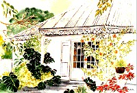

La période des vacances est connue pour redonner goût à la lecture à une certaine partie de la population adepte des bains de soleil et du slogan « soyons oisifs intelligemment ». C'est aussi une période où décide parfois d'acheter un bouquin dans la boutique de la gare pour passer le temps du voyage.
A tous ces vacanciers bronzeurs et aux autres je conseillerais le site de la littérature réunionnaise (aujourd’hui disparu). Présentant des auteurs classiques et des contemporains, écrivains réunionnais d'hier, d'avant-hier et d'aujourd'hui. Ce site plutôt conformiste a entre autres, un cachet graphique professionnel. Cela rend sa lecture agréable même si son but est apparemment de vous faire lire autre chose.

Case de Cilaos par Odile Houot. avec végétation colorée et dentelle de lambrequins.
Pour les vacanciers qui préfèrent visiter les musées de leurs lieux de vacances et les galeries des rues commerçantes, jetez un œil sur ces aquarelles créoles d'Odile HOUOT, dépaysement garanti. Odile est membre de l’Union Des Artistes de la Réunion, une association d'artistes plasticiens ‒Principalement des peintres mais il y a aussi un sculpteur‒ qui existe depuis 1979 et qui organise régulièrement des expositions sur l'île. Maintenant ces expos sont virtuelles et permanentes sur le site de l’UDAR.
Odile HOUOT n'expose plus ses toiles sur le site de l'UDAR qui a été rénové après avoir quité son hebergeur Runisland. En revanche, mais sa case de Cilaos est toujours exposée ci-dessus ainsiaque sur son site perso.
Un autre site de littérature réunionnaise est abordé dans un article de l’été 2004. Vous pouvez aussi lire un article à propos du mythe de la Lémurie.
Désolé, il n'y a plus de confiture sur cet article. Pas de pôt.